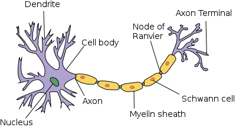
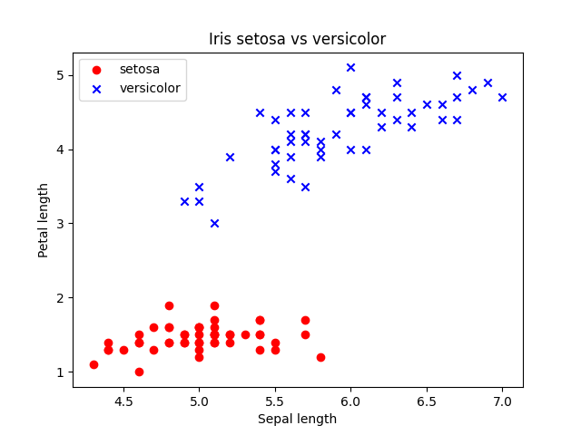

MCP Model & Perceptron
Around 1943, Warren McCulloch (neurophysiologist) and Walter Pitts (mathematician) have a clear objective in mind:
to understand the mechanisms involved in a biological brain and exploit them in AI field.
They recreated a nerve cell as a binary logic gate
[1].
Dendrites receive multiple signals which enter the cell body; if the accumulated signal exceeds a certain threshold an output signal is sent in output through the axon.
A few years later Frank Rosenblatt (psychologist) published the first concept of perceptron learning and an algorithm to automatically tune dendrites’ sensibility to make a decision. [2].
Dendrites receive multiple signals which enter the cell body; if the accumulated signal exceeds a certain threshold an output signal is sent in output through the axon.
A few years later Frank Rosenblatt (psychologist) published the first concept of perceptron learning and an algorithm to automatically tune dendrites’ sensibility to make a decision. [2].

$z$ $=$ $w_1$$x_1 + ... + w_mx_m = \sum_{m}^{j=0}x_jw_j = w^Tx$
$\phi(z)$ $= \left\{\begin{array}{@{}l@{}} 1 & \textrm{if $z >= \theta$}\\ -1 & \textrm{otherwise} \end{array}\right.\,$
Consider $w_0 = $ - $\theta$ , $x_0 = 1$ and $z = w_0x_0 + w_1x_1 + ... + w_mx_m$
$\phi(z) = \left\{\begin{array}{@{}l@{}} 1 & \textrm{if $z >= 0$}\\ -1 & \textrm{otherwise} \end{array}\right.\,$
$\phi(z)$ $= \left\{\begin{array}{@{}l@{}} 1 & \textrm{if $z >= \theta$}\\ -1 & \textrm{otherwise} \end{array}\right.\,$
Consider $w_0 = $ - $\theta$ , $x_0 = 1$ and $z = w_0x_0 + w_1x_1 + ... + w_mx_m$
$\phi(z) = \left\{\begin{array}{@{}l@{}} 1 & \textrm{if $z >= 0$}\\ -1 & \textrm{otherwise} \end{array}\right.\,$
In other words, the idea behind both MCP and Perceptron is to use a reductionist approach to emulate how a single biological neuron works, which can or cannot propagate an electrical impulse.

- Initialize $w_j$ to 0
- For each training sample $x^{(i)}$:
- Compute output $\hat{y}$ (a binary classification, in our case)
- Update weights
We have already formalized input and activaction function, now we can establish a learning rule to update weights: $w_j := w_j + \Delta w_j$.
In particular $\Delta w_j =$ $\eta$ $(y^{(i)} - \hat{y}^{(i)}) x_j^{(i)}$
In particular $\Delta w_j =$ $\eta$ $(y^{(i)} - \hat{y}^{(i)}) x_j^{(i)}$
If $1$ is predicted correctly there is no adjustment to $w_j$ : $\Delta w_j = \eta(1-1)x_j^{(i)} = 0$
Otherwise weights are updated towards the direction of the real, correct prediction : $\Delta w_j = \eta(1-(-1))x_j^{(i)} = \eta(2)x_j^{(i)}$
Otherwise weights are updated towards the direction of the real, correct prediction : $\Delta w_j = \eta(1-(-1))x_j^{(i)} = \eta(2)x_j^{(i)}$
$w_j^{(i)}$ update is proportional to $x_j^{(i)}$ value
If the two classes can be separated with a linear decision boundary, weights will eventually converge to a point where no more updates occur (figure).
In all the other cases, the adjustment of the weights will never alt and we ought to stop the training forcibly by setting
a threshold for the number of misclassifications or a maximum number of epochs.
